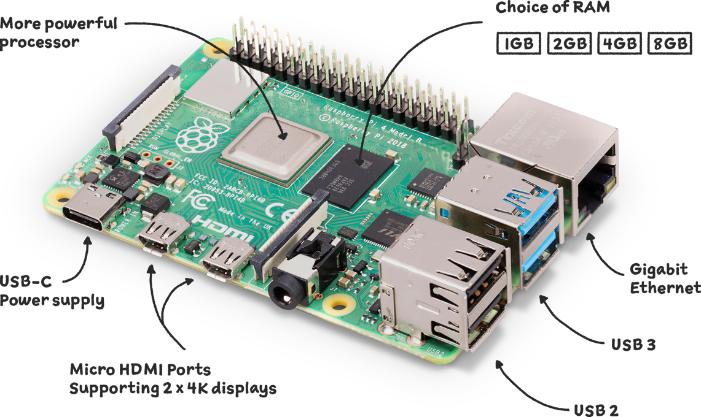
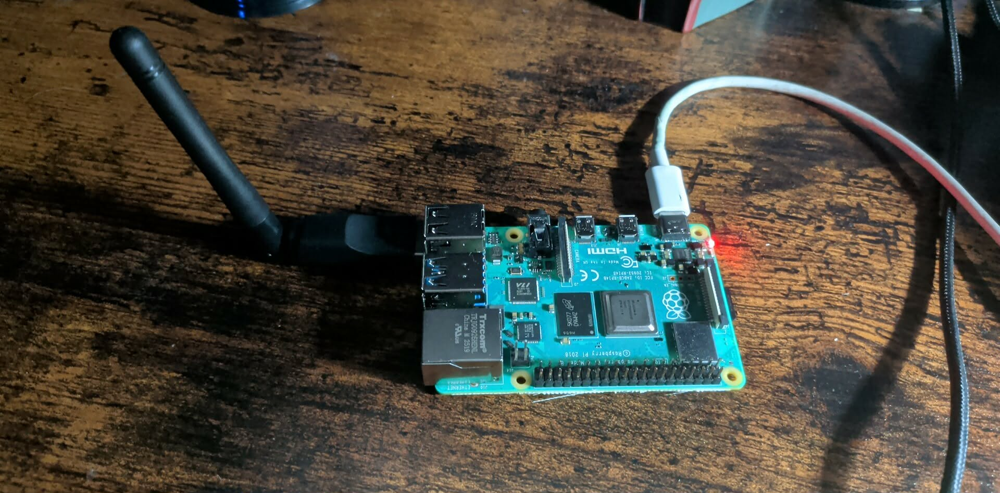
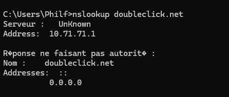
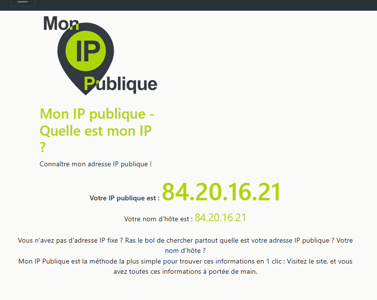

TP1 – Création d'un appareil de sécurité réseau
Mise en situation
Problématique
Le développement technologique est un sujet très présent dans notre société. De plus en plus, les gens se munissent de cellulaires et d’appareils de tout genre afin d’être connectés partout, tout le temps. Traîner ses appareils avec soi amène son lot de défis concernant la sécurité de ceux ci. En effet, selon le site Web pensezcybersecurite.gc.ca du gouvernement du Canada, « 87 % des consommateurs ont potentiellement risqué de compromettre leurs renseignements personnels en utilisant des Wi Fi publics ».
Piste de solution
Afin de remédier à cette problématique, il serait intéressant d’avoir un intermédiaire entre un réseau Wi-Fi public potentiellement dangereux et nos appareils. Il existe plusieurs façons de protéger un réseau, que ce soit avec l’aide d’un VPN ou de bloqueurs de publicités. Cet appareil devrait être portatif, il devrait pouvoir recevoir un Wi Fi public, appliquer une protection et renvoyer un Wi Fi sécurisé.
Solution
Après quelques recherches et analyses, une solution intéressante serait d’utiliser un Raspberry Pi qui effectuerait un pont parfait entre les deux réseaux. Il est portatif et suffisamment puissant pour obtenir ce que l’on recherche. Cependant, ces composantes seules ne seraient pas suffisantes pour répéter un Wi Fi : il nous faudrait une antenne Wi Fi ainsi qu’une batterie portative afin de pouvoir le transporter partout.
Matériel utilisé
1. Raspberry Pi 4
- Fabricant : Raspberry Pi
- Module Wi Fi/Bluetooth
- Prise Ethernet
- USB 3.0, 2.0
- Port USB C

2. Antenne Wi Fi 2,4G
- Fabricant : Lazycloud
- Modèle : RT5370
Logiciel utilisé
OpenWrt : système d’exploitation utilisé principalement pour des routeurs. Il permet de gérer les connexions réseau passantes.
ProtonVPN : choisi pour son faible coût pour une courte durée.
Expérimentation
Étape 1 : Configuration
Pour débuter, j’ai dû insérer ma carte SD dans mon ordinateur et télécharger OpenWrt à l’intérieur. Par la suite, j’ai réinséré ma carte SD et j’ai connecté un fil Ethernet de mon Raspberry Pi à mon ordinateur, configuré les ports sur une adresse IP et effectué les changements à mon réseau afin que la carte Wi Fi puisse se connecter à Internet. Finalement, j’ai changé l’adresse IP de mon Pi et j’ai lancé le Wi Fi.

Étape 2 : Configuration de l’antenne Wi Fi
À la première tentative, mon ancienne antenne ne fonctionnait pas pour projeter le Wi Fi : elle ne fonctionnait que pour recevoir. Donc, j’ai fait une commande Amazon afin d’avoir une antenne qui projette. Lors de l’arrivée de la bonne antenne, j’ai installé les pilotes nécessaires à son bon fonctionnement et je l’ai configurée afin qu’elle projette mon nouveau réseau configuré.

Étape 3 : Installation de ProtonVPN
Une fois mon réseau fonctionnel, j’ai installé ProtonVPN pour protéger mon réseau davantage. J’ai installé les packages nécessaires à son bon fonctionnement et travaillé sur l’interface LuCI de OpenWrt. Afin de vérifier qu’il fonctionnait correctement, j’ai vérifié le changement d’adresse et vérifié qu’il affichait bien l’adresse IP de Proton de Toronto. Le VPN sert également de bloqueur de publicités.

La page de publicité est bloquée par ProtonVPN

L'adresse IP est une adresse qui appartient à Proton VPN
Analyse
Avis
Le projet que j’ai réalisé a été un succès et je crois qu’il me sera utile lors de mes prochains voyages. En ayant un routeur protégé, il sera plus simple de partager un Wi Fi avec mes partenaires de voyage sans avoir besoin d’installer mon VPN sur chacun de nos appareils. En prenant en compte que certains VPN limitent le nombre de machines qui y sont connectées, je n’aurai pas ce problème.
Longévité
En utilisant une batterie portative et en traînant une prise de courant, le réseau ne risque pas de manquer quand on en a besoin, sachant que la plupart des lieux publics ont de l’électricité de comprise. Pour l’instant, mon Raspberry Pi n’a pas de protection extérieure, mais avec cette protection, je pourrais le protéger davantage et ça me permettrait d’avoir un vrai petit routeur portable. Pour l’instant, il est assez fragile.
Stabilité
J’ai observé certains problèmes de stabilité lors de mes tests. Il semble qu’il ne reste pas toujours opérationnel : je dois donc le redémarrer. Je crois que ce problème vient de l’instabilité de mon réseau à domicile, qui a tendance à se déconnecter sans raison, ce qui est possible de se produire sur les réseaux publics également. Donc, il doit servir pour des cas plus spontanés que permanents.
Efficacité
Le montage réussit à faire ce que je voulais, mais comme mentionné ultérieurement, les problèmes de stabilité réseau font qu’il n’est pas parfait. Donc, il faut un réseau assez stable pour qu’il fonctionne en continu. Le VPN a aussi tendance à ralentir la vitesse du réseau, ce qui fait que mon montage ne peut pas faire des tâches trop complexes.
Maintenabilité
Les matériaux nécessaires à mon montage sont faciles à remplacer : une visite sur Amazon et le problème est réglé. Cependant, il est important de conserver un VPN (payant), ce qui, à long terme, peut devenir coûteux. Mais pour des abonnements à long terme, le coût peut rester relativement bas à défaut de l’utiliser.
Robustesse
Pour l’instant, mon montage n’a pas de boîtier, mais s’il en avait un, il serait un module solide, assez facile à transporter et brancher. Je n’ai qu’une antenne assez solide et un fil USB C à brancher.
Potentiel de la technologie
Mon projet a un réel potentiel d’être efficace et utile. Avec les villes qui offrent des services de plus en plus diversifiés et des banlieues qui s’agrandissent de plus en plus, les gens sont souvent en déplacement et se connectent à toutes sortes de réseaux publics comme pour le travail, une sortie en famille ou un voyage. Bien que le LTE existe, l’augmentation du coût de la vie fait que les gens se tournent vers des alternatives telles que les réseaux publics pour économiser leurs données. Mon montage serait parfait pour ces personnes là qui chercherait à se protéger sur les réseaux publics.
Avantages et inconvénients
Mon montage est excellent pour les voyages et le travail en dehors de la maison. Cependant, il ne réagit pas toujours bien sur des réseaux instables. Bien que la plupart des compagnies aient des réseaux stables, il se peut que, dans certaines situations à long terme, il soit nécessaire de redémarrer le Raspberry Pi. Sur le marché, il existe déjà des petits routeurs portatifs. Cependant, le coût serait moindre avec le Raspberry Pi et il y a toujours possibilité de le modifier sans contrainte.
Conclusion
En conclusion, mon projet m’a permis de créer un appareil qui me servira lors de mes déplacements dans la vie de tous les jours. Il me protège contre les attaques sur les réseaux publics et peut me permettre de naviguer sans tracas. Ce projet est un succès et je le partagerai avec mes proches afin de se protéger mutuellement des attaques malveillantes.